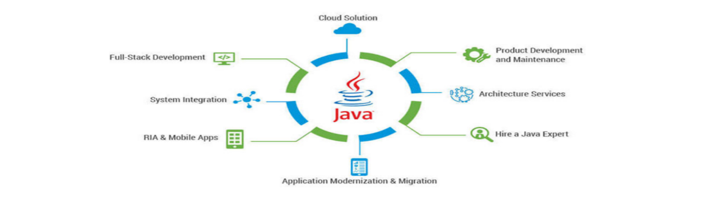
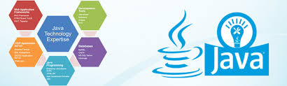
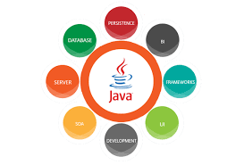
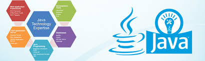
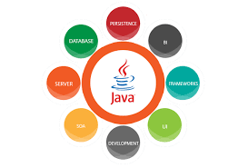

Gjuha programuese Java
Java është një gjuhë programimi për qëllime të përgjithshme që është e bazuar në klasë, e orientuar në objekt dhe është krijuar për të pasur sa më pak varësi zbatimi. Ai ka për qëllim që t'i lejojë zhvilluesit e aplikacionit të shkruajnë një herë, të ekzekutojnë kudo WORA që do të thotë që kodi Java i përpiluar mund të funksionojë në të gjitha platformat që mbështesin Java pa pasur nevojë për kompensim.
Aplikimet Java janë përpiluar në mënyrë tipike në bytekodin që mund të ekzekutohet në çdo makinë virtuale Java (JVM) pavarësisht nga arkitektura themelore e kompjuterit. Sintaksa e Java është e ngjashme me C dhe C ++, por ajo ka më pak lehtësi të nivelit të ulët se secila prej tyre. Që nga viti 2019, Java ishte një nga gjuhët më të njohura të programimit në përdorim sipas GitHub,veçanërisht për aplikacionet në internet të klientëve-server, me një raportues të raportuar 9 milion.
Nga kush u zhvillua Java?
Java fillimisht u zhvillua nga James Gosling në Sun Microsystems (që prej asaj kohe është fituar nga Oracle) dhe u lëshua në 1995 si një komponent thelbësor i platformës Java Java e Sun Microsystems. Përpiluesit origjinal dhe referencë të hartuesve Java, makineritë virtuale dhe bibliotekat e klasave u lëshuan fillimisht nga Sun nën licencat e pronarit. Që nga maji 2007, në përputhje me specifikimet e Procesit të Komunitetit Java, Sun kishte hequr pjesën më të madhe të teknologjive të tij Java nën Lejen e Përgjithshme Publike GNU. Ndërkohë, të tjerët kanë zhvilluar implementime alternative të këtyre teknologjive të Diellit, të tilla si GNU Compiler për Java (përpilues i bytekodeve), GNU Classpath (biblioteka standarde) dhe IcedTea-Web (shtojca e shfletuesit për aplikacione).
Versionet e Javes
Versionet më të fundit janë Java
lëshuar në Shtator 2019, dhe Java 11, një version aktual i mbështetur aktualisht i mbështetur (LTS), i lëshuar në 25 Shtator 2018; Oracle lëshoi për trashëgiminë Java 8 LTS azhurnimin e fundit falas publik në janar 2019 për përdorim komercial, ndërsa përndryshe do të mbështesë ende Java 8 me azhurnime publike për përdorim personal deri në të paktën dhjetor 2020. Oracle (dhe të tjerët) rekomandojnë shumë që të mos çinstaloni më të vjetër versionet e Java për shkak të rreziqeve serioze për shkak të çështjeve të pazgjidhura të sigurisë.Meqenëse Java 9 (dhe 10 dhe 12) nuk mbështetet më, Oracle këshillon përdoruesit e saj që menjëherë të kalojnë në Java 11 (Java 13 është gjithashtu një opsion jo-LTS). James Gosling, Mike Sheridan dhe Patrick Naughton iniciuan projektin e gjuhës Java në qershor 1991.Java ishte dizajnuar fillimisht për televizionin interaktiv, por ishte shumë e përparuar për industrinë dixhitale të kabllove televizive në atë kohë.Gjuha fillimisht u quajt lisi pas një peme lisi që qëndronte jashtë zyrës së Gosling. Më vonë projekti kaloi me emrin Green dhe më në fund u riemërua Java, nga kafeja Java. [23] Gosling projektoi Java me një sintaksë të stilit C / C ++ që programuesit e sistemit dhe aplikacioneve do t'i gjenin të njohur.Sun Microsystems lëshoi zbatimin e parë publik si Java 1.0 në 1996.Ajo premtoi Shkruaj një herë, Run Kudo (WORA), duke siguruar kohë pa kosto të kandiduar në platformat popullore. Mjaft e sigurt dhe që përmban siguri të rregullueshme, lejonte kufizime në hyrje në rrjet dhe skedarë. Shfletuesit kryesorë të internetit së shpejti përfshinë aftësinë për të ekzekutuar aplikacione Java brenda faqeve të internetit, dhe Java shpejt u bë e njohur. Përpiluesi Java 1.0 u shkrua përsëri në Java nga Arthur van Hoff për të përputhur në mënyrë rigoroze me specifikimet e gjuhës Java 1.0.Me ardhjen e Java 2 (lëshuar fillimisht si J2SE 1.2 në Dhjetor 1998 - 1999), versionet e reja kishin konfigurime të shumta të ndërtuara për lloje të ndryshme të platformave. J2EE përfshinte teknologji dhe API për aplikacionet e ndërmarrjeve zakonisht ekzekutohen në mjedise të serverëve, ndërsa J2ME paraqiti API të optimizuara për aplikacione mobile. Versioni i desktopit u riemërua J2SE. Në vitin 2006, për qëllime marketingu, Sun u riemërua versionet e reja J2 si Java EE, Java ME, dhe Java SE, përkatësisht. Në 1997, Sun Microsystems iu afrua organit të standardeve ISO / IEC JTC 1 dhe më vonë Ecma International për të zyrtarizuar Java, por shpejt u tërhoq nga procesi.Java mbetet një standard de fakto, e kontrolluar përmes Procesit të Komunitetit Java.Në një kohë, Sun i bëri shumicën e zbatimeve të tij në Java pa pagesë, pavarësisht nga statusi i tyre i pronarit. Dielli prodhoi të ardhura nga Java përmes shitjes së licencave për produkte të specializuara siç është Sistemi i Ndërmarrjeve Java. Më 13 nëntor 2006, Sun lëshoi pjesën më të madhe të makinës së tij virtuale Java JVM si softuer të lirë dhe me burim të hapur FOSS, nën kushtet e licencës së përgjithshme publike të GNU GPL. Më 8 maj 2007, Sun përfundoi procesin, duke bërë të gjitha kodet thelbësore të JVM të tij
Android
Gjuha Java është një shtyllë kryesore në Android, një sistem operativ me burim të hapur. Edhe pse Android, i ndërtuar në kernel Linux, është shkruar kryesisht në C, Android SDK përdor gjuhën Java si bazë për aplikacionet Android, por nuk përdor asnjë nga standardet e tij standarde GUI, SE, ME ose standarde të tjera të vendosura Java. [70] Gjuha e kodit të kodit të mbështetur nga SDK Android është i papajtueshëm me kodin Java bytecode dhe funksionon në makinën e vet virtuale, i optimizuar për pajisjet me memorie të ulët të tilla si smartphone dhe kompjutera tablet. Në varësi të versionit Android, bytekodi interpretohet ose nga makina virtuale Dalvik ose është përpiluar në kod amtare nga Runtime Android. Android nuk siguron bibliotekën e plotë standarde Java SE, megjithëse SDK Android përfshin një zbatim të pavarur të një nëngrupi të madh të tij. Ai mbështet Java 6 dhe disa tipare Java 7, duke ofruar një zbatim të pajtueshëm me bibliotekën standarde (Apache Harmony). Polemikë Shihni gjithashtu: Oracle America, Inc. v. Google, Inc. Përdorimi i teknologjisë së lidhur me Java në Android ka çuar në një mosmarrëveshje ligjore midis Oracle dhe Google. Më 7 maj 2012, një juri e San Francisko zbuloi se nëse API mund të mbrohej nga të drejtat e autorit, atëherë Google kishte shkelur të drejtat e autorit të Oracle duke përdorur Java në pajisjet Android. [71] Gjykatësi i rrethit William Haskell Alsup vendosi më 31 maj 2012, se API nuk mund të mbrohen nga të drejtat e autorit, [72] por kjo u kthye nga Gjykata e Apelit e Shteteve të Bashkuara për Qarkun Federal në maj 2014. [73] Më 26 maj, 2016, gjykata e rrethit vendosi në favor të Google, duke vendosur shkeljen e të drejtave të autorit të Java API në përdorimin e drejtë të kushtetutës Android. [74] Në Mars 2018, ky aktvendim u rrëzua nga Gjykata e Apelit, e cila hodhi poshtë çështjen për të përcaktuar dëmet e gjykatës federale në San Francisko. [75] Google paraqiti një peticion për shkrimet e certiorarit në Gjykatën Supreme të Shteteve të Bashkuara në Janar 2019 për të kundërshtuar dy vendimet e bëra nga Gjykata e Apelit në favor të Oracle. [76]
Menaxhimi automatik i memorjes
Java përdor një koleksionues automatik të mbeturinave për të menaxhuar kujtesën në ciklin e jetës së objektit. Programuesi përcakton kur janë krijuar objektet dhe koha e funksionimit të Java është përgjegjëse për rikuperimin e kujtesës pasi objektet nuk janë më në përdorim. Sapo të mos mbajnë referenca për një objekt, memorja e paarritshme bëhet e ligjshme për t’u çliruar automatikisht nga mbledhësi i plehrave. Diçka e ngjashme me një rrjedhje të kujtesës mund të ndodhë akoma nëse kodi i një programuesi mban një referencë për një objekt që nuk është më i nevojshëm, zakonisht kur objektet që nuk janë më të nevojshme ruhen në enë që janë ende në përdorim. Nëse quhen metoda për një objekt që nuk ekziston, hidhet një përjashtim nga treguesi pavlefshëm. [48] [49] Një nga idetë që qëndron pas modelit të menaxhimit automatik të kujtesës Java është që programuesit mund të kursehen nga barra e detyrimit për të kryer menaxhimin manual të kujtesës. Në disa gjuhë, memorja për krijimin e objekteve caktohet në mënyrë implicite në pirg ose shpërndahet në mënyrë të qartë dhe zbërthehet nga toka. Në rastin e fundit, përgjegjësia e administrimit të kujtesës i qëndron programuesit. Nëse programi nuk zbërthen një objekt, ndodh një rrjedhje e kujtesës. Nëse programi përpiqet të përdorë ose të zhvendosë kujtesën që tashmë është zbardhur, rezultati është i papërcaktuar dhe i vështirë për t'u parashikuar, dhe programi ka të ngjarë të bëhet i paqëndrueshëm ose i rrëzimit. Kjo mund të korrigjohet pjesërisht nga përdorimi i treguesve inteligjentë, por këto shtojnë sipër dhe kompleksitetin. Vini re se mbledhja e mbeturinave nuk parandalon rrjedhjet logjike të kujtesës, d.m.th. ato ku kujtesa është ende e referuar, por nuk përdoret kurrë. Grumbullimi i mbeturinave mund të ndodhë në çdo kohë. Në mënyrë ideale, do të ndodhë kur një program është i papunë. Isshtë e garantuar që të shkaktohet nëse ka një memorie të pamjaftueshme falas në grumbull për të ndarë një objekt të ri; kjo mund të shkaktojë që një program të ngecë në çast. Menaxhimi i qartë i kujtesës nuk është i mundur në Java. Java nuk mbështet aritmetikën e treguesit të stilit C / C ++, ku adresat e objekteve mund të manipulohen në mënyrë aritmetike (p.sh. duke shtuar ose zbritur një kompensim). Kjo i lejon grumbulluesit të mbeturinave të zhvendosin objektet e referuara dhe të sigurojnë llojin dhe sigurinë e llojit. Ashtu si në C ++ dhe në disa gjuhë të tjera të orientuara nga objekti, variablat e llojeve primitive të të dhënave Java janë ruajtur direkt në fusha (për objektet) ose në rafte (për metoda), sesa në grumbull, siç është zakonisht e vërtetë për të dhënat jo-primitive llojet (por shiko analizën e arratisjes). Ky ishte një vendim i vetëdijshëm nga projektuesit e Java për arsye të performancës. Java përmban lloje të shumta të grumbulluesve të mbeturinave. Si parazgjedhje, HotSpot përdor koleksionin e mbeturinave paralele për pastrimin e mbeturinave. [50] Sidoqoftë, ekzistojnë edhe disa grumbullues të tjerë mbeturinash që mund të përdoren për të menaxhuar grumbullin. Për 90% të aplikacioneve në Java, mbledhësi i mbeturinave Concurrent Mark-Sweep (CMS) është i mjaftueshëm. [51] Oracle synon të zëvendësojë CMS me Grumbullimi i mbeturinave (G1). [52] Zgjidhja e problemit të menaxhimit të kujtesës nuk e heq programuesin nga barra e trajtimit siç duhet të llojeve të tjera të burimeve, siç janë lidhjet e rrjetit ose bazës së të dhënave, trajton skedarët, etj., Veçanërisht në prani të përjashtimeve.
Përdorimi i teknologjisë së lidhur me Java në Android ka çuar në një mosmarrëveshje ligjore midis Oracle dhe Google. Më 7 maj 2012, një juri e San Francisko zbuloi se nëse API mund të mbrohej nga të drejtat e autorit, atëherë Google kishte shkelur të drejtat e autorit të Oracle duke përdorur Java në pajisjet Android. [71] Gjykatësi i rrethit William Haskell Alsup vendosi më 31 maj 2012, se API nuk mund të mbrohen nga të drejtat e autorit, [72] por kjo u kthye nga Gjykata e Apelit e Shteteve të Bashkuara për Qarkun Federal në maj 2014. [73] Më 26 maj, 2016, gjykata e rrethit vendosi në favor të Google, duke vendosur shkeljen e të drejtave të autorit të Java API në përdorimin e drejtë të kushtetutës Android. [74] Në Mars 2018, ky aktvendim u rrëzua nga Gjykata e Apelit, e cila hodhi poshtë çështjen për të përcaktuar dëmet e gjykatës federale në San Francisko. [75] Google paraqiti një peticion për shkrimet e certiorarit në Gjykatën Supreme të Shteteve të Bashkuara në Janar 2019 për të kundërshtuar dy vendimet e bëra nga Gjykata e Apelit në favor të Oracle. [76]  


